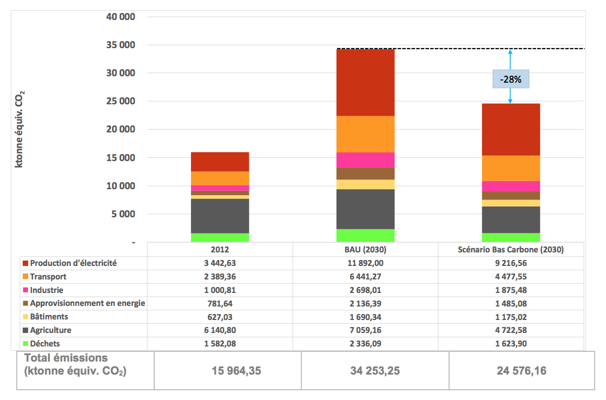

Key facts
| Area | 322,463 km² - 550 kilometers of coastline |
| Climate | South: equatorial climate, hot and humid.
North: drier tropical climate |
| Population | 22.67 million, of which 41.5% are under 15 years old (RGPH, 2014) |
| GNP | $ 34.25 billion (2014) |
| GNI / h | $ 1,550 (2014) |
| Weight in world GDP | 0.06% Constant Purchasing Power Parity (PPP) in 2011 |
| Share of agriculture in GDP | 24% |
| Primary energy consumption / h | 0.64 toe in 2012 |
| Access to electricity | 56% of households |
Sources: RGPH 2014, NDP 2016-2020, AfDB, World Bank, DHS 2011-2012, IEA, NAIP 2010-2015
After a decade of politico-military crisis that has led to a deep social divide, Côte d'Ivoire has set itself the goal of becoming an emerging country by 2020. To stimulate and coordinate the many facets of its development, the Côte d'Ivoire has returned to its planning tradition.
The country has also returned to rapid growth (in the order of 8% per year), in a context of peace. Populations are also beginning to take advantage of the renewed dynamism, thanks to efforts to redistribute and correct the inequalities achieved in the different sectors.
The 2016-2020 NDP currently being finalized to consolidate this trajectory towards emergence and industrialization. This planning is part of a longer-term vision. The National Prospective Study "Ivory Coast 2040" is also being finalized.
The country 's national development strategy combined with high population growth would lead to a substantial increase in greenhouse gas (GHG) emissions. In addition, Côte d'Ivoire is vulnerable to the impacts of climate change.
To meet these challenges, in 2012, Côte d'Ivoire set up the National Climate Change Program (NCCP) to coordinate, propose and promote measures and strategies in the fight against climate change. A National Strategy for Combating Climate Change 2015-2020 was adopted at the end of 2014.
Through this Nationally Determined Planned Contribution (INDC), Ivory Coast, the United States seeks to reduce its carbon footprint by favoring mitigation options with high "co-benefits" (Section 2: Mitigation); strengthen the country's resilience to climate change (Section 3: Adaptation); bring coherence to its sectoral policies and strengthen its mechanism and implementation tools to facilitate the achievement of these objectives (Section 4); and mobilize for this purpose, including funding, both national and international (Section 5).
While taking into account the need to reduce greenhouse gas emissions, Ivory Coast, as African economies face the challenge of development to improve the quality of life of its population. The growing need for this development, which includes increasing agricultural production, agro-industrial processing, the fight against deforestation and the continuation or even the acceleration of the supply of modern energy to all inhabitants, does not undermine the country's political will to contribute to the reduction of GHG emissions. However, Côte d'Ivoire needs to be supported to pursue the path of sustainable development, respectful of the environment and concerned about the challenges of climate change.
The INDCs of Côte d'Ivoire are therefore a contribution based on the development of the sectoral development strategies providing for the support of the technical and financial partners.
| Type of contribution | Combination of objectives and mitigation actions | |
|---|---|---|
| National long-term goal on GHG emissions | Low Carbon Scenario (2030) | Reduction of GHG emissions compared to emissions in the target year (2030) in a baseline scenario (Business As Usual or BAU). |
| Target year | 2030 | |
| Base year | 2012 | |
| Cumulative reduction of emissions by 2030 | Low Carbon Scenario (2030) | -28% |
| Sector objectives | Low Carbon Scenario (2030) |
|
| Equity of the Contribution |
|
|
| Ambition of the Contribution | Côte d'Ivoire is committed to:
The 28% drop in emissions from the low-carbon scenario compared to a baseline scenario (BAU) represents a significant effort for a country with a GDP per capita of 148th worldwide (2014, on a PPP basis). |
|
| Short-lived atmospheric pollutants (PCDV / SLCP) | Côte d'Ivoire is committed to reducing short-lived climate pollutants that have an impact on climate in addition to long-lasting GHGs. To this end, the country will develop by 2018 a national action plan to reduce PCDV / SLCP whose contributions to global warming are clearly established by UNEP in its 2011 report. | |
2.2. Basic Scenarios and Low Carbon Development
The figure below shows ( i ) 2012 base year emissions, ( ii ) a Business As Usual scenario and ( iii ) a low-carbon development scenario showing the impact of large-scale sectoral actions whose implementation may be subject to additional external support.

| Total emissions (ktonne equivalent CO 2 ) | 15,964.35 | 34,253.25 | 24,576.16 |
The table below shows the relative shares of the different sub-sectors in GHG emissions.
| Sub-sectors | 2012 | BAU (2030) | Low Carbon Scenario (2030) | ||
|---|---|---|---|---|---|
| Emissions (ktonne Equiv CO 2 ) | Emissions (ktonne Equiv CO 2 ) | Percentage increase over 2012 | Emission (ktonne Equiv CO 2 ) | Percentage decrease compared to BAU | |
| Electricity production | 3,442.63 | 11,892.00 | 52.93 | 9,216.56 | -7.81 |
| Transport | 2,389.36 | 6,441.27 | 25.38 | 4,477.55 | -5.73 |
| Industry | 1,000.81 | 2,698.01 | 10.63 | 1,875.48 | -2.40 |
| Energy supply | 781.64 | 2,136.39 | 8.49 | 1,485.08 | -1.90 |
| buildings | 627.03 | 1,690.34 | 6.66 | 1,175.02 | -1.50 |
| Agriculture | 6,140.80 | 7,059.16 | 5.75 | 4,722.57 | -6.82 |
| Waste | 1,582.08 | 2,336.09 | 4.72 | 1 623.90 | -2.08 |
| Total | 15,964.35 | 34,253.25 | 114.56 | 24,576.16 | -28.25 |
| Lens type | % Reduction from target year emissions in a baseline scenario. |
| Start of implementation of INDC | 2016. |
| Coverage (country) | All the countries. |
| Gas covered | Carbon Dioxide (CO2 ), Methane (CH4 ), Nitrous Oxide (N2O). |
| Sectors / sources covered | Agriculture, Energy, Waste, LULUCF (Forestry: not included in the inventories). |
| Basic scenario (BAU) | This scenario describes the evolution of GHG emissions by 2030 by sector of activity according to the Government's current development strategies. |
| Mitigation scenario (low carbon) | This scenario describes the evolution of GHG emissions by 2030 on the basis of low-carbon orientations in the main sectors of activity, notably energy, agriculture and waste. |
| Sources for scenarios (BAU and Low Carbon) | ENP 2040, PND 2016-2020, Master Plan Production and Transmission of Electric Power 2014-2030, PNIA 2010-2015, Industrial Policy (2013). |
| PRG | The GWP values used are those determined by the Intergovernmental Panel on Climate Change (IPCC, SAR). |
| Baseline Emissions Projection Methodology (BAU) | The inventory of the base year (2012) is that of the Third National Communication (TCN).
The baseline scenario (BAU) is constructed by applying to the emissions of the different sectors assumptions of evolution depending on sectoral annual growth rates, the evolution of the population, the electricity mix and the trend evolution of efficiency. sector. |
| Projection methodology for the low carbon scenario | The low-carbon scenario is constructed by applying to sector emissions of the baseline scenario an estimate of the gains associated with the implementation of policies and projects in the sector. |
| Land Use Approach, Land Use Change and Forestry (LULUCF) Emissions Approach | The emissions of this important sector in Côte d'Ivoire will have to be analyzed more precisely by 2020 in order to be integrated into the overall objective. This can be done thanks to the better knowledge of the areas by soil type thanks to the satellite imagery coupled with the exploitation of the field data. |
Côte d'Ivoire intends to implement the following Mitigation Actions 1 :
Agriculture/Forestry Key Issues in Agriculture: ( i ) Self-reliance and Food Security Research and ( ii ) Improving Productivity and Competitiveness Big Challenge for the Forest Sector: Sustainable Forest Management and Target of 20% National Coverage in the Forest Code 2014 Key Message: Zero Deforestation Agriculture Concept |
||||
|---|---|---|---|---|
| Orientation | Actions / actions | Co-benefits | ||
| Economic | social | environmental | ||
| Consistency of national planning and rural spatial planning to develop agriculture and the forestry sector | Consistency of National Agricultural Investment Plans (NAIP) with strategies to limit deforestation (REDD + process) through a master plan for land use planning in 2030 (securing land) in consultation with each agricultural sector and the territories | Enhancing the economic benefits of the NAIP and forest development plans |
|
|
| Drafting of a regional spatial planning scheme for the different regions with the involvement of local communities | Economic development of the regions | Reduction of social conflicts | Increased ecosystem services | |
| Delimitation of village territories and materialization of boundaries with forest species | Mastery of land and spatial dynamics of land occupation |
|
Increased ecosystem services | |
| Securing land with the involvement of agricultural inter-branches, cooperatives and the private sector to facilitate procedures and achieve economies of scale | Facilitate investment in the land use sector | - Reducing social conflict-Social cohesion | Increased ecosystem services | |
| Agricultural development without extension on the remaining forest areas and less emitting GHGs | Decoupling of agricultural production and deforestation through the promotion of intensive agricultural practices with reduced impacts on the environment and agroforestry |
|
|
|
| Realization of the concept "Zero deforestation agriculture" and valorization of associated products |
|
|
|
|
| Development of basic infrastructure that will improve the logistics of transport of agricultural products, livestock and fish farming |
|
|
||
| Intensification of environmentally sound agricultural, livestock and fisheries production to prevent deforestation | Promotion and intensification of the production and use of high-yielding and resistant seeds, particularly climatic factors and diseases (non-GMOs and hybrids) | Increased productivity and income | Creation of sustainable value chains and jobs | Reduction of pressure on agricultural land |
| Strengthening partnerships and collaborations on soil analysis to improve their productivity and improve the implementation of agricultural innovations | Increased agricultural innovation and yields | Job creation | Maintaining ecosystem services | |
| Streamlining the use of chemical inputs and facilitating the use of organic inputs | Reduction of medical costs related to the uncontrolled use of chemical inputs | Reduction of health risks related to chemical inputs | Reduction of environmental damage due to chemical inputs | |
| Development of efficient mechanization of agriculture and improvement of packaging, harvesting and conservation infrastructure | Lower post-harvest losses and higher incomes | Job creation | Maintaining ecosystem services | |
| Promotion of sustainable and integrated practices to improve agricultural production capacities and enhance the resources of the environment | Promotion of the agriculture-livestock association, agroforestry, and conservation agriculture particularly at the level of community and private plantations | Increased yields and farm income | Reduction of social conflicts | Improvement of biodiversity |
| Maximum reduction in rice submersion to limit methane emissions | Maintaining agricultural yields | Maintenance of jobs | Reduction of GHG emissions | |
| Sustainable management of organic soils |
|
|
|
|
| Strengthening and popularizing the results of scientific research on natural resource management (including soil science and physiology pathology and post-harvest technology) | ||||
| Improved cropping calendars and production techniques | Increased yields and farm income |
|
||
| Forest sector development through sustainable forest management and improvement of forest governance | Implementation of Forest Law Enforcement, Governance and Trade Mechanism (FLEGT) | Revival of the forest economy | Improving forest governance | Maintaining ecosystem services |
| Drafting and implementation of management plans and participatory management of classified forests | Diversification of local community incomes | People's participation in forest management | Maintaining ecosystem services | |
| Stabilization of the extension of agricultural areas in classified forests | Securing farmers' income | Job creation | Preservation of biodiversity | |
| Restoration of classified forests with the involvement of local communities | Diversification of local community incomes | Job creation | Increased carbon stocks | |
| Strengthening sustainable management of classified forests and protected areas, including through spatial land monitoring |
|
|
|
|
| Facilitating the rehabilitation of degraded lands and reforestation of savannah areas, and strengthening carbon stocks in degraded forests through the promotion of village reforestation |
|
|
|
|
| Establishment of an incentive payment scheme for environmental services (PES) to encourage village reforestation and conservation of natural forests in rural areas and support small producers to adopt sustainable production practices | Increased community income | Job creation |
|
|
| Development of sustainable domestic energy solutions for the cooking needs of populations | Reforestation with fast-growing wood energy species; Promotion of improved stoves and Promotion of alternatives in charcoal through the valorization of agricultural biomass | Diversification of local community incomes |
|
Reduction of GHG emissions |
| costs | The overall cost of the PNIA 2010-2015 is estimated at CFAF 2,040 billion, of which CFAF 1,565 billion for the period 2012-2015 (same order of magnitude for PNIA 2016-2020).
The low carbon orientation of future plans will have to be distilled on all components |
|||
|
Energy / Transportation Major energy issues: ( i ) Improve people's access to electricity and energy at an affordable price; and ( ii ) Increase the use of renewable energy in electricity generation Key message: "42% renewable energy including large hydropower in the electricity mix" |
||||
|---|---|---|---|---|
| Orientation | Actions / actions | Effects / Benefits | ||
| Economic | social | environmental | ||
| Control of energy consumption of the systems by a voluntarist energy efficiency policy including renewable energy | Cross-cutting measures | |||
| Investment in energy efficiency and improvement of the participation rate of renewable energy in the electricity mix by 2030 |
|
|
|
|
| Establishment of an institutional and regulatory framework for renewable energy and energy efficiency | Improving the environment around the energy sector |
|
|
|
| Strengthening Côte d'Ivoire's integration into the regional energy market, through interconnection with other countries in the region |
|
|
|
|
| Sub-sectoral measures: Industry | ||||
Implementation of a strategy to reduce wastage in the energy consumption of industries through:
|
|
|
|
|
| Encouraging companies to invest in energy efficient equipment |
|
Development of new qualified job streams |
|
|
| Evaluate potential substitution or optimization (eg cogeneration or upgrading); |
|
Development of new qualified job streams |
|
|
| Sub-sector measures: Buildings sub-sector | ||||
| Development of national regulations on the thermal efficiency of buildings (construction and renovation) |
|
|
|
|
| Training of all actors in the value chain in low energy construction |
|
|
|
|
| Sub-sectoral measures: Transport sub-sector | ||||
| Improving mobility and developing low-carbon transport offers |
|
|
|
|
| Integration of an energy / climate dimension in territorial planning documents in order to limit distances, to work on functional diversity and to propose efficient public transport policies |
|
|
|
|
| Accompaniment of the communes in the development of urban transport plans (example of the urban train in the district of Abidjan) |
|
|
| |
| Facilitating the purchase of low-emission vehicles and scrapping the most polluting through standards, incentives or obligations |
|
|
|
|
| Development of energy production from renewable sources | Put in place an incentive framework for the development of renewable energies (call for tenders, FIT, tax exemption, ...) |
|
|
|
| Remove barriers to investment (strengthening the institutional framework, securing investments, training banks, ...) |
|
|
|
|
| Invest in R & D, particularly by strengthening the capacities of the Renewable Energy Research Institute (IREN) and evaluate the opportunity of creating a Renewable Energy Promotion Agency |
|
|
|
|
Facilitate the development of projects on the relevant sectors:
|
|
|
|
|
| Waste
Major issues of waste: (i) Improve urban sanitation; and (ii) Ensuring sustainable management and recovery of waste |
||||
| directions | Measures/actions | Effects/Benefits | ||
| Economic | social | environmental | ||
| Efficient recovery of resources to move towards a circular economy | Develop and implement a sustainable waste management policy and strategy including the valorisation aspect |
|
|
|
Develop circular economy actions:
|
|
|
|
|
| costs | The 2014-2030 Generation and Transmission Energy Master Plan specifies that the total amount of production-transport investments for the period 2014-2030 amounts to 8,000 billion FCFA. The additional investments related to the mining sector would cost close to 1,600 billion FCFA. | |||
| Framework of the action | Description | ||||
|---|---|---|---|---|---|
| Impacts and vulnerability | Impacts: floods, storms, landslides, heat-wave droughts, bush fires, reduced river flow and dwindling surface water volume, shortened average duration of vegetative growth periods, and increased exposure of plants to water stress , low growth of plant biomass, reduction of the productive potential of ecosystems, reduction of arable land due to degradation, coastal erosion up to 3 meters per year, which can reach 6 to 12 meters during storms, attenuation of the phenomenon of upwelling seasonal have impacts on: agriculture and livestock, land use, forests, water resources, energy, coastal areas, fisheries, infrastructure (habitats), transport, public health and gender. Eleven vulnerable sectors indicated in May 2013 by the Minister of the Environment, Urban Sanitation and Sustainable Development (MINESUDD) with the aim of proposing a National Adaptation Plan
|
||||
| Actions to Plan for Climate Resilient Development | SEGMENT
Water Resources: Control and management of water resources (strengthening of watershed planning and coordination, development of agro-pastoral dams, development of new hydro-agricultural sites and reservoirs, improvement of water efficiency irrigation, recovery of rainwater and floodwater ... Agriculture / Livestock / Fisheries : Improve production technologies, build capacity of actors Forests and land use: improve silvicultural species, promote reforestation and agro-ecology, restore degraded lands, promote fertility improvement techniques and soil conservation Coastal zones: Regulate the construction and extraction of sand on the coast, relocate and rebuild structures in danger on a fallback line, build active protection structures (groynes, breakwaters), passive, restoration (curtains wind, revegetation, even reforestation -mangroves-). Energy : Organize the wood energy sector, avoid the silting up of streams, reprofile and restore flows in the minor beds of rivers. Popularize the construction and use of improved stoves in rural areas |
||||
| Loss and damage | Human losses: losses related to hydro-meteorological disasters, vector-borne diseases (to illnesses-malaria, water-borne diseases, respiratory diseases) and related to bush fires;
Losses linked to coastal erosion: Costs ranging from 2.355 to 6.75 billion FCFA (US $ 4.0 to 6.75 million) for land losses in the event of submersion between 0.5 and 2 meters Loss of agricultural production (at least 10% of annual rice production is CFAF 50 billion or US $ 85.6 million - based on the cost of importing rice - 10% of annual cocoa production, or about US $ 202 million established on the cocoa export price, "destruction of large areas of oil palm and coconut in the Abidjan regions." Loss of infrastructure (houses, roads, etc.). "The reduction of water resources and the impact on food production and habitat are to be assessed, as are the public health implications". |
||||
| Obstacles, gaps and needs for successful adaptation actions | Obstacles:
Gaps:
Needs :
|
| activities | Objectives and Description | Co-benefits | Cost (billion FCFA or millions of US $) |
|---|---|---|---|
| Water resources | |||
| Control and manage water resources | Reduce vulnerability and increase resilience
|
|
NAIP (Land for Intensive Crops 84.86 billion FCFA - US $ 14.3 million), facilitate access to small irrigation equipment, 1.8 billion FCFA - US $ 3.03 million - realize hydro-agricultural schemes 28.37 billion FCFA - US $ 47.8 million, support the maintenance of irrigation facilities and equipment 0.6 billion FCFA - US $ 0.1 million, rehabilitate pastoral dams and the reservoirs of water 3 billion FCFA .- US $ 5.05 million |
| Agriculture | |||
| Strengthen agricultural, animal and fish production (agricultural sector 23% of GDP over the period 2000-2013) | Reduce vulnerability and increase resilience
|
|
SNDCV (agricultural seed development plan12.05 billion FCFA - US $ 20.3 million, direct support to production activities 540 billion FCFA - US $ 909.9 million)
NRDS (technical support to production - rice seeds, inputs and mechanization: 299 billion FCFA - US $ 503.8 million). PSDEPA (productivity and competitiveness improvement 80.948 billion FCFA - US $ 136.4 million of which 2.18 billion - US $ 3.7 million - for the production of fodder and seeds, preservation of aquaculture genetic diversity 7 , 45 billion FCFA - US $ 12.6 million) |
| Forests and land use | |||
| Fight against deforestation and land degradation | Reduce vulnerability and increase resilience
|
|
PF (Reduction of the impact climate change 33.64 billion FCFA.- US $ 20 million) NAIP (support the diffusion of technological innovations 0.43 billion FCFA -US $ 0.7 million-, technical CES 5 billion from FCFA -US $ 8.4 million-). |
| Hydrometeorological Disaster Management | |||
| Building resilience, especially through the fight against coastal erosion | Reduce vulnerability and increase resilience, especially for the Sassandra - Vridi - Port-Bouët section
|
|
SACCL (dynamic modeling of coastal profile 0.184 billion FCFA - US $ 0.31 million), reforestation of mangroves and other appropriate species 0, 65 billion FCFA - US $ 1.1 million, establishment of a fund 1, CFAF 95 billion - US $ 3.3 million - SACCL considers secondary development against erosion in Assinie 19.97 billion FCFA - US $ 33.6-, around the Vridi canal, the opening of the exit Comoé 22.55 billion FCFA - US $ 38 million. |
Côte d'Ivoire will take the following measures to implement these INDCs, monitor them and, if necessary, update / revise them 2 .
| Description | Goal | |
|---|---|---|
| Legislative and regulatory framework | Adoption of legal texts relating to the implementation, monitoring and evaluation of INDCs and COP resolutions of the Conference of the Parties. | Sustaining low-carbon development actions across successive governments |
| Institutional frame | Creation of an Interministerial Committee on Climate Change (CICC) bringing together ministers in charge of relevant sectors, chaired by the Prime Minister and responsible in particular for monitoring the implementation of INDCs | Ensure effective implementation of a national cross-cutting climate policy |
| Establishment of a CICC Secretariat (CICCS) anchored in MINESUDD to technically support the CICC in planning, coordinating the implementation, monitoring and evaluation of INDCs and having a clear roadmap calibrated on the periodicity of the PND | ||
| Operation-nalisation of INDCs | Assessment of the climate impact of any new law or public policy / program / project (impact study) | Integrate mitigation and adaptation considerations into public decision-making processes |
| Translation of INDCs into sectoral operational programs articulated with / included in the PND | Operationalize INDCs in particular through the national planning process | |
| Integration of Climate Change (CC) into national planning (NDP) and sectoral policies as well as local planning. | Consistency of NDPs and sectoral plans and policies (eg NAIPs) especially with disaster risk reduction with country mitigation and adaptation goals and actions formulated in these INDCs | |
Some complementary studies (to be carried out after submission of the INDC):
|
Encrypt and refine the description of INDC mitigation and adaptation actions | |
| Study of the feasibility of a system for coding CC expenditure in the state budget | Revenue monitoring and climate expenditure in the national budget | |
|
Obtain reliable data on GHG emissions | |
| Creation of an Observatory of air quality (CO, SO, etc.) and GHG monitoring | Monitoring of air quality | |
| Strengthening research and development and transfer actions in clean technologies. | ||
| Communication |
|
|
| Update / Revision of INDCs | Frequency: Revision in light of the results of COP21, if necessary. Every 5 years in connection with the PND unless otherwise indicated by the COPs | |
| Responsible: SCICC Secretariat | ||
| Funding | Côte d'Ivoire intends to mobilize the following sources to finance the mitigation and adaptation actions of these INDCs: | |
| Private Finance | Côte d'Ivoire intends to mobilize international or domestic private financing (equity and loans) as much as possible for the co-financing of relevant INDC actions, particularly actions that can generate an acceptable financial return for the sector. private. To this end, Côte d'Ivoire will strive to increase the bank rate, stimulate the formation of savings, and strengthen domestic financial markets and banking systems, as well as the attractiveness of Côte d'Ivoire for foreign investment (investment climate) | |
| National budget | Côte d'Ivoire will play its part in financing the actions of these INDCs, which are part of the state budget. This state effort can take the form either of direct budgetary expenditure or transit through specific funds financed from the state budget. | |
| Donors / PTF | Côte d'Ivoire will seek support from donors and TFPs (grants, loans and technical assistance) to finance the actions of these INDCs. Access to sovereign loans from Development Finance Institutions (DFIs) will be crucial. | |
| Green Climate Fund | Côte d'Ivoire is considering whether to set up a national entity accredited to the Green Climate Fund (GCF). It is already in the process of preparing for the operationalization of the GCF at the national level (Readiness Program) | |
| Carbon markets | Côte d'Ivoire supports the inclusion of international carbon markets such as the Clean Development Mechanism (CDM) in a post-2020 climate agreement and proposes that such an instrument, coupled with an appropriate accounting regime (MRV) , can be used to help finance some investments in low carbon and climate resilient infrastructure. Côte d'Ivoire considers that some of the low-carbon development options contained in these INDCs, or additional actions, could be financed in whole or in part by the international transfer of carbon assets taking into account the integrity considerations of the environment and transparency. | |
| Other economic instruments | The opportunity to deploy tools to generate a price signal on the social cost of carbon (market or carbon tax) and thus to internalize the carbon externality will be explored | |
| First five-year period | A first five-year tranche of Actions to be financed is in preparation and will be presented during the 4th quarter of 2015. It will be consistent with, and reflected in, the 2016-2020 NDP. | |
| Capacity Building | Mitigation |
|
| Adaptation | The capacity building of actors (especially women, farmers, etc.) focuses on new technical routes in the context of intensified and sustainable production methods.
Inform, educate and communicate on climate risks
Environmental Information Management System
|
|
| Transfers and technology development, R & D |
|
|
Main abbreviations
| BAD | African Development Bank |
| DC | Climatic changes |
| THESE | Water and soil conservation |
| COP | Conference of the Parties (at the UNFCCC) |
| SCOND | Expected Contribution Determined at the National Plan |
| EE | Energetic efficiency |
| ENP | National Prospective Ivory Coast 2040 |
| RE | Renewable energies |
| CFA | Franc CFA |
| GHG | Greenhouse gas |
| IFD | Financial Institutions of Development |
| INDC | Intended Nationally Determined Contribution (INDC) |
| IREN | Research Institute on Renewable Energies |
| NAMAs | Nationally Appropriate Mitigation Actions |
| OECD | Organization for Economic Cooperation and Development |
| PF | Forestry Policy and Strategic Plan for Implementation |
| GDP | Gross domestic product |
| PND | National Development Plan |
| NIPA | National Agricultural Investment Plan |
| UNEP | United Nations Environment Program |
| PPP | Purchasing Power Parity |
| PSDEPA | Strategic Plan Development of Livestock, Fisheries and Aquaculture |
| PTF | Technical and Financial Partners |
| REDD + | Reduction of GHG Emissions from Deforestation and Forest Degradation (Reduced Emissions from Deforestation and Forest Degradation) |
| SACCL | Climate Change Adaptation Strategy on Côte d'Ivoire Coast |
| SCECCI | Côte d'Ivoire Coastal Environmental Management Strategy and National Action Plan |
| SNDCV | National Strategy for the Development of Food Crops other than Rice |
| NRDS | Revised National Strategy for the Development of the Rice Sector |
| US $ | United States Dollar |
| LULUCF | Land use, land use change and forests |
References
| General / transversal | |
|---|---|
| Planning |
|
| Country data |
|
| Mitigation | |
| General |
|
| Agriculture |
|
| Energy |
|
| Forest |
|
| Industry |
|
| Adaptation | |
| Framework of the action |
|
| Vulnerability |
|
| stock |
|
These actions are formulated at a high level of aggregation consistent with the spirit of the INDC, which should not be a catalog of programs and projects. Subsequent work will be needed to translate these orientations into operational programs. ↩
Depending on the outcome of negotiations on the development of a new international climate agreement. ↩
Côte d'Ivoire is currently conducting a study on the potential of bioenergy. ↩